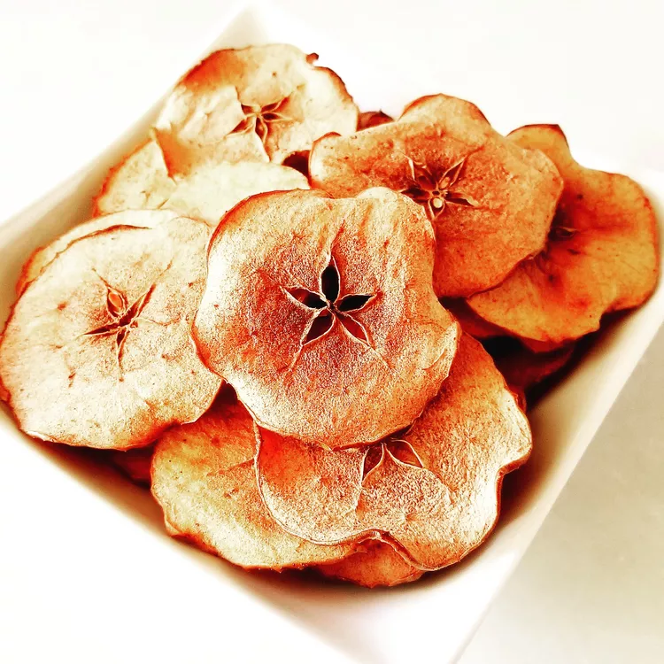

Baked Apple Chips

Baked apple chips are easy to make, loaded with fiber, and have the crunchy satisfaction of potato chips with a fraction of the fat and calories.
Ingredients
- 2 tablespoons of water
- 1 tablespoon of ground cinnamon
- 4 Granny Smith apples, cored and sliced into very thin rounds
Instructions
- Preheat oven to 250 degrees F (120 degrees C). Line two baking sheets with parchment paper.
- Whisk sugar and cinnamon together in a large bowl. Add apple slices and toss to coat. Arrange apple slices in a single layer on prepared baking sheets.
- Bake apples in the preheated oven until browned and just crisped, about 2 hours. Cool completely.
Cook's Note:
Use a mandoline or sharp knife to slice the apples.
Place apple slices on wire racks and decrease baking time by approximately 10 to 15 minutes. You are drying the apples, not baking them. Let cool; they will get crispier while cooling.